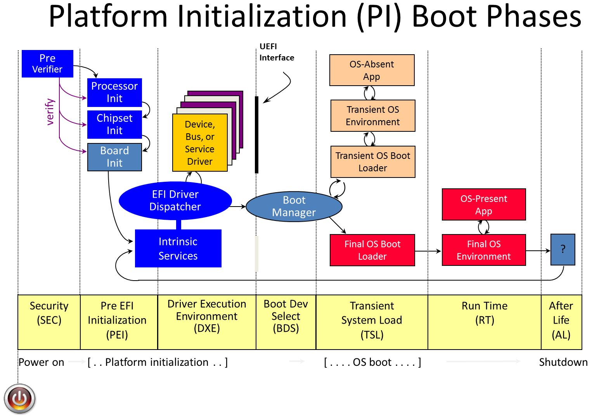

The Evolution of UEFI into Patina with Rust and ODP
Overview
Firmware and UEFI firmware in particular has long been written in C. Firmware operates in a unique environment to other system software. It is written to bootstrap a system often at the host CPU reset vector and as part of a chain of trust established by a hardware rooted immutable root of trust. Modern PC firmware is extraordinarily complex with little room for error.
Firmware Evolution
From a functional perspective, firmware must initialize the operating environment of a device. To do so involves integrating vendor code for dedicated microcontrollers, security engines, individual peripherals, SOC initialization, and so on. Individual firmware blobs may be located on a number of non-volatile media with very limited capacity. The firmware must perform its functional tasks successfully or risk difficult to diagnose errors in higher levels of the software stack that may impede overall device usability and debuggability.
These properties have led to slow but incremental expansion of host firmware advancements over time.

Importance of Security in Firmware
From a security perspective, firmware is an important component in the overall system Trusted Computing Base (TCB). Fundamental security features taken for granted in later system software such as kernels and hypervisors are often based on secure establishment in a lower layer of firmware. At the root is a concept of "trust".
While operating systems are attractive targets due to their ubiquity across devices and scale, attackers are are increasingly viewing firmware as an attack surface in response to increasingly effective security measures being applied in modern operating systems. While significant research has been devoted across the entire boot process, UEFI firmware on the host CPU presents a unique opportunity to gain more visibility into early code execution details and intercept the boot process before essential activities take place such as application of important security register locks, cache/memory/DMA protections, isolated memory regions, etc. The result is code executed in this timeframe must carry forward proper verification and measurement of future code while also ensuring it does not introduce a vulnerability in its own execution.
Performance Reliability in Firmware
From a performance perspective, firmware code is often expected to execute exceedingly fast. The ultimate goal is for an end user to not even be aware such code is present. In a consumer device scenario, a user expects to press a power button and immediately receive confirmation their system is working properly. In a server scenario, fleet uptime is paramount. Poorly written firmware can lead to long boot times that impact virtual machine responsiveness and workload scaling or, even worse, Denial of Service if the system fails to boot entirely. In an embedded scenario, government regulations may require firmware to execute fast enough to show a backup camera within a fixed amount of time.
All of this is to illustrate that firmware must perform important work in a diverse set of hardware states with code that is as small as possible and do so quickly and securely. In order to transition implementation spanning millions of lines of code written in a language developed over 50 years ago requires a unique and compelling alternative.
Rust and Firmware
For these reasons, modern PC firmware necessitates a powerful language that can support low-level programming with maximum performance, reliability, and safety. While C has provided the flexibility needed to implement relatively efficient firmware code, it has failed to prevent recurring problems around memory safety.
Stringent Safety
Common pitfalls in C such as null pointer dereferences, buffer and stack overflows, and pointer mismanagement continue to be at the root of high impact firmware vulnerabilities. These issues are especially impactful if they compromise the system TCB. Rust is compelling for UEFI firmware development because it is designed around strong memory safety without the usual overhead of a garbage collector. In addition, it enforces stringent type safety and concurrency rules that prevent the types of issues that often lead to subtle bugs in low-level software development.
Languages aside, UEFI firmware has greatly fallen behind other system software in its adoption of basic memory vulnerability mitigation techniques. For example, data execution protection, heap and stack guards, stack cookies, and null pointer dereference detection is not present in the vast majority of UEFI firmware today. More advanced (but long time) techniques such as Address Space Layout Randomization (ASLR), forward-edge control flow integrity technologies such as x86 Control Flow Enforcement (CET) Indirect Branch Tracking (IBT) or Arm Branch Target Identification (BTI) instructions, structured exception handling, and similar technologies are completely absent in most UEFI firmware today. This of course exacerbates errors commonly made as a result of poor language safety.
Given firmware code also runs in contexts with high privilege level such as System Management Mode (SMM) in x86, implementation errors can be elevated by attackers to gain further control over the system and subvert other protections.
Developer Productivity
The Rust ecosystem brings more than just safety. As a modern language firmware development can now participate in concepts and communities typically closed to firmware developers. For example:
-
Higher level multi-paradigm programming concepts such as those borrowed from functional programming in addition to productive polymorphism features such as generics and traits.
-
Safety guarantees that prevent errors and reduce the need for a myriad of static analysis tools with flexibility to still work around restrictions when needed in an organized and well understood way (unsafe code).
Modern Tooling
Rust includes a modern toolchain that is well integrated with the language and ecosystem. This standardizes tooling fragmented across vendors today and lends more time to firmware development. Examples of tools and community support:
-
An official package management system with useful tools such as first-class formatters and linters that reduce project-specific implementations and focus discussion on functional code changes.
-
High quality reusable bundles of code in the form of crates that increase development velocity and engagement with other domain experts.
-
Useful compilation messages and excellent documentation that can assist during code development.
Rust's interoperability with C code is also useful. This enables a phased adoption pathway where codebases can start incorporating Rust while still relying upon its extensive pre-existing code. At the same time, Rust has been conscious of low-level needs and can precisely structure data for C compatibility.
UEFI Rust in ODP
UEFI code in ODP plans to participate within the open Rust development community by:
- Engaging with the broader Rust community to learn best practices and share low-level system programming knowledge.
- Leveraging and contributing back to popular crates and publishing new crates that may be useful to other projects.
- A general design strategy is to solve common problems in a generic crate that can be shared and then integrate it back into firmware.
- Collaborating with other firmware vendors and the UEFI Forum to share knowledge and best practices and incorporate elements of memory safety languages like Rust into industry standard specifications where appropriate. Some specifications have interfaces defined around concepts and practices common in unsafe lanuages that could be improved for safety and reliability.
Looking forward, we're continuing to expand the coverage of our firmware code written in Rust. We are excited to continue learning more about Rust in collaboration with the community and our partners.
Setting up for Patina
Patina is based upon the foundations of UEFI, and as such, much of the tooling used to build boot firmware
continues to leverage the existing proven tools from Tianocore, such as the stuart_build set of commands, and many other parts familiar within the EDK II framework.
The steps to setting up the tooling can be found documented in the Readme of the patina-qemu repository, but what is not immediately clear from that discussion is the role that different repositories play. This is a bit of a marathon, so we'll walk through it here.
The repositories involved
The full umbrella of ODP material encompassses multiple repositories, because ODP covers several diverse aspects of firmware development that speak to different audiences. Simililarly, the Patina subsection of ODP itself is maintained in multiple repositories, which ones are utilized by a developer will depend upon the goals and scope of a particular project.
The most common Patina-related repositories are as follows
-
patina - This maintains a library of crates that implement UEFI-like code in Rust. This defines all of the reusable 'Patina SDK' components that may be pulled into other workflows (such as patina-dxe-core-qemu) to create customized
.efiimages. -
patina-dxe-core-qemu - This repository holds the code responsible for pulling in reusable Rust DXE Core components from the Patina SDK, combining these with locally defined custom components, and building the resulting
.efiimage that may be loaded into the QEMU emulator. -
patina-qemu - This repository supplies a platform wrapper that loads the
.efifirmware into QEMU using EDK build tools (stuart_build) from the.efifile indicated at build time. -
patina-fw-patcher - This repository simplifies the iterative turnaround for incremental builds in a workflow, once one has been established, able to forego the full
stuart_buildprocess for each code update. -
patina-mtrr - This repository supports a MTRR(Memory Type Range Registers) API that helps program MTRRs on x86_64 architecture.
-
patina-paging - Common paging support for various architectures such as ARM64 and X64
In this discussion we will be focused on the steps required to build Patina into a QEMU emulator. We will be primarily concerned with the patina-dxe-core-qemu and patina-quemu repositories for this.
Preparing the workspace environment
Much of the steps shown here are restructured from the patina-qemu README, but contains a few additional clarifications.
The end result will be a set of Patina rust-based firmware running as a QEMU hosted emulated platform. Once this is established, we can work with the firmware ourselves and/or we can target an actual platform board instead of the emulator. But let's not get ahead of ourselves just yet. First we need to get things into place.
Qemu Q35 package
In these steps, we will be building an emulated platform based on the Intel Q35 chipset. This will demonstrate the Patina UEFI firmware development for x86/64. The patina-qemu repository also has support for an ARM architecture. Refer there for more information.
Preparing for "Stuart"
The EDK II build tool, Stuart, is duplicated in the patina-qemu repository and further leveraged by specific platform build scripts.
Python
But before we go there, we need to make sure we have Python installed. For Windows, download the official Python installer
(For Linux or MacOS, consult available sources for installing Python for your platform).
The installer should install both python and py (python launcher). Test your installation with
py -0
This should list the available python versions, and
python --version
should verify your default python version is available.
patina-qemu
Now to get on with building the "Stuart" tools:
Start by cloning the patina-quemu repository to your workspace.
git clone git@github.com:OpenDevicePartnership/patina-qemu.git
and then we are going to establish a virtual python environment in this space and use it to build the tools.
(Windows)
cd edk2
py -m venv .venv
.venv\Scripts\activate.bat
pip install -r pip-requirements.txt --upgrade
stuart_setup -c .pytool/CISettings.py
Patina-qemu
Now we are equipped to build from the patina-qemu repository. Start by cloning the patina-quemu repository to your workspace.
git clone git@github.com:OpenDevicePartnership/patina-qemu.git
Shorten the path
On Windows, the build commands reference pathnames that when combined can exceed the maximum allowed path length, so to prevent issues here, we will redirect where we work so that our paths are shorter.
Do this from within the patina-quemu repository root directory:
cd
<this will show you the full path of the repository root, where you are>
subst z: <full path shown above>
cd z:\
z:
now you should be able to treat your Z:\ location the same as your repository root, but the resulting path names will be shorter.
Preparing and Building
(from within your new Z:\ location)
# Create a Python virtual environment for this workspace
py -e -m venv patina.venv
# and then activate it
.\patina.venv\Scripts\activate.bat
Note that there is activate.bat (for cmd) and Activate.ps1 (for PowerShell). Use the one that matches your console shell.
Now install the python dependencies:
pip install --upgrade -r pip-requirements.txt
Then use the Stuart tools to setup and build:
stuart_setup -c Platforms\QemuQ35Pkg\PlatformBuild.py
stuart_upgrade -c Platforms\QemuQ35Pkg\PlatformBuild.py
First and subsequent setup
The steps above will create a virtual python environment and install the stuart tools into it.
You should only need to do these steps the one time for your workspace.
On subsequent visits, simply activate the virtual environment again (.\patina.venv\Scripts\activate.bat)
and then proceed with the build and/or run steps.
To build and install into QEMU, include the --FlashRom argument:
stuart_build -c Platforms\QemuQ35Pkg\PlatformBuild.py --FlashRom
building will take several minutes. At the end of this you should see a QEMU window that shows a brief splash graphic and then a shell prompt and output showing success.
You will also see a long train of runtime debug output to the console window. This will exceed the scroll-back buffer of the window so you won't be able to see the first portion of it. The tail end of this runtime log will likely contain a number of TRACE level warnings at this stage. We can ignore this output at this time.
To build without running on QEMU, leave off the --FlashRom flag.
What did we just build?
The Patina DXE Core was successfully installed into your QEMU emulator! But the actual Rust code for that is contained within a prebuilt .efi binary. Next we will look at the steps you will need to take to update that .efi binary so that your firmware development can be set into place.
Now that the QEMU tooling is ready, let's look at getting a customized Patina core and your own component code onto it with the next steps.
Patina-dxe-core-qemu Code
The "patina-dxe-core-qemu" repository contains the tooling and build steps needed to combine elements of the patina SDK (maintained in the 'patina' repository) with locally provided component code.
Let's review the component parts of UEFI again at this point:

All of these sections can be found covered in the Patina implementation.
The DXE Core (colloquially pronounced "Dixie") is the Driver Execution Environment and where most of the key development for components is centered.
There is also of course the Runtime Services (RT) that continue beyond boot of the OS.
And there are all the parts in between, including security management, transient system load (TSL) handling, logging, boot device selection, and so forth.
There are some key differences between a conventional UEFI implmentation and Patina.
One such difference is there is no traditional EFI Dispatcher. Instead, the DXE Core is built monolithically using dependency injection for the drivers that are bound to a prescribed function.
Read more about the construction and differences of the Patina code base in the Patina Documentation
How does this come together?
Within the patina-dxe-core-qemu repository there is a primary file at bin\q35_dxe_core.rs that controls the monolithic construction of the core and its various components. Inpecting this file, we see a key function, Core::defualt() that is the launching point for a number of .with_component() and .with_config() calls chained together to construct the complement of our firmware image.
Patina uses a Dependency-Injection scheme to map components and their configurations into the dispatch mechanism, and this is where the registration comes together.
Reviewing and finalizing the setup
Before we start constructing our own component, let's take a moment to be sure we are set up properly and understand the steps of the process:
- We will be making our coding additions within our local patina-dxe-core-qemu repository space, and build it there.
- When the code is ready, we will switch to our Z:\ location (which is our alias for the patina-qemu repository root) and build and run the stuart_build process that will construct our emulator image and execute it in QEMU.
Finalizing setup
For the binding in step 2 to work, we need to tell the patina-qemu tools where the .efi target file is, so that it can load it into the emulator. Let's find out where this is.
from your local patina-dxe-core-qemu root, type cargo make q35 this should produce a build with no errors. Now look in the location target\x86_64-unknown-uefi\debug\ and you should see a qemu_q35_dxe_core.efi file created there.
Note the full path to this file, i.e. <your-path-to-repository-root>\target\x86_64-unknown-uefi\debug\qemu_q35_dxe_core.efi
Go to your patina-qemu local directory and edit the file Platforms\QemuQ35Pkg\QemuQ35Pkg.fdf. Around about line 644 you will see a section that looks like this:
FILE DXE_CORE = 23C9322F-2AF2-476A-BC4C-26BC88266C71 {
!if $(TARGET) == RELEASE
SECTION PE32 = $(DXE_CORE_BINARY_PATH)/release/qemu_q35_dxe_core.efi
!else
SECTION PE32 = $(DXE_CORE_BINARY_PATH)/debug/qemu_q35_dxe_core.efi
!endif
SECTION UI = "DxeCore"
}
This implies that the DXE_CORE_BINARY_PATH environment variable can be used to redirect where the .efi file comes from.
As of this writing, however, the repository code does not behave this way. Instead, we must change this to a literal path that points to our location.
Change this section to look like this:
FILE DXE_CORE = 23C9322F-2AF2-476A-BC4C-26BC88266C71 {
SECTION PE32 = <your-path-to-repository-root>\target\x86_64-unknown-uefi\debug\qemu_q35_dxe_core.efi
SECTION UI = "DxeCore"
}
So that it will point to the output where your .efi is being constructed. Note that we are explicitly referring to the debug (default) build here. Adjust this path as needed for release builds or other targets.
Redirecting log output
You may recall that when we did our first test run using the default .efi location that the runtime debug log output was output to the console and was too lengthy to see the top portion of. We can redirect the output to go to a file instead, which will allow us to see everything as well as keeping it in a place we can review after each run.
Edit the file Platforms\QemuQ35Pkg\Plugins\QemuRunner.py and look for a line that says args = "-debugcon stdio" (about line 66) and change this to read args = "-debugcon file:debug.log". This will redirect log output to a file "debug.log" in your Z:\ location when run.
Now, still at the Z:\ prompt (activated), type
stuart_build -c Platforms\QemuQ35Pkg/PlatformBuild.py --FlashRom
Again, this will take several minutes and cover a few phases with lots of console output. Finally, the QEMU window will appear, display it's splash graphic, identifying text, and shell prompt.
You will find your Z:\debug.log file now populated and containing the run output.
Verify this is from your local build by checking this log. You should see the log line
INFO - DXE Core Platform Binary v0.3.2
around about line 900 - 910 or so note version number may be different
This log line is emitted from the bin/q35_dxe_core.rs file of the patina-dxe-core-qemu sources, which is the launch point for the components.
We will create and install our own component in the next exercise.
Creating a component
By this point, we have set up our development workspace between the patina-dxe-core-qemu and the patina-qemu repositories and have them wired together so that the image loaded and run in the QEMU emulator is that which was built from the patina-dxe-core-qemu sources.
Now let's create our own component that we can add to this set.
In the src directory we find a component directory and some other small .rs files. The component directory is where we will be adding our new component.
Defining the component code
Inside the component directory, create a new file named test_component.rs that contains this content:
use log::info;
use patina_sdk::{component::params::Config, error::Result};
#[derive(Default, Clone, Copy)]
pub struct Name(pub &'static str);
pub fn run_test_component(name: Config<Name>) -> Result<()> {
info!("============= Test Component ===============");
info!("Hello, {}!", name.0);
info!("=========================================");
Ok(())
}
As you can see, this presents a classic 'hello world' style example, which is all we will need to get started.
It starts by importing (the use statements at the top) the logging support we will use for our message, the Config construct from the patina_sdk that we will use for our parameter, and the classic Rust Result construct.
The function signature for this implementation forms the basis for the dependency injection we will register in the next step.
Registering the component
The file bin/q35_dxe_core.rs is the main binding and execution point for the manifest of components that will make up the image.
If we look at this file we will see a Core:default() function is called with a number of with_config() and with_component() calls, along with a few others, chained together. This sets up the components that will be included.
The chain concludes with .start().unwrap(). We can add our component just prior to this, by inserting the lines
.with_component(test_component::run_test_component)
.with_config(test_component::Name("World"))
just before the .start() call.
importing the component
Of course, before this code can register our component, it must know about it.
We name it as one of the exported components by editing src/q35/component.rs and adding the line pub mod test_component; to this file.
We can then add our import to the list of 'usestatements near the top of thebin/q35_dxe_core.rs` file with the line
use qemu_resources:q35::component::test_component;
removing other samples
(optional)
You may have noticed in the debug.log dispatches to other "hello, world" sample components. These come from the patina_samples section of the 'patina' repository. Recall, the 'patina' repository is like a library of prebuilt-crates. This sample code there is one of these crates, but we don't need to use it. Let's either comment out or remove the use patina_samples as sc line from the list of use statements and these lines from the Core::default() chain:
.with_config(sc::Name("World")) // Config knob for sc::log_hello
.with_component(sc::log_hello) // Example of a function component
.with_component(sc::HelloStruct("World")) // Example of a struct component
.with_component(sc::GreetingsEnum::Hello("World")) // Example of a struct component (enum)
.with_component(sc::GreetingsEnum::Goodbye("World")) // Example of a struct component (enum)
As this will remove some of the clutter from our example build. We will leave the other components there, and verify that we've added our test_component references.
Building
We can now build with the command cargo make q35
.
Once we have built without errors, switch to Z:\ and run
stuart_build -c Platforms\QemuQ35Pkg\PlatformBuild.py --FlashRom
and check the debug.log after it runs.
Search for 'test component' and you should find this:
INFO - DISPATCH_ATTEMPT BEGIN: Id = ["qemu_resources::q35::component::test_component::run_test_component"]
INFO - ============= Test Component ===============
INFO - Hello, World!
INFO - =========================================
INFO - DISPATCH_ATTEMPT END: Id = ["qemu_resources::q35::component::test_component::run_test_component"] Status = [Success]
Congratulations! you have built and run your first Patina Rust component and executed it as emulated firmware!
Using the Patina FW Patcher
There is no need to rebuild everything with the Stuart build process each time you make a change in Rust.
The Patina-FW-Patcher is maintained in a repository of the same name: patina-fw-patcher. The README there has instructions for use.
There are a couple of ways to efficiently update the firmware build, depending upon the circumstances.
(TODO practical examples)